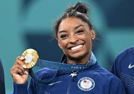

SIMONE BILES
|  |
- Fecha de nacimiento: 14 de marzo de 1997
- Lugar de nacimiento: Columbus, Ohio, Estados Unidos
- Nacionalidad: Estadounidense
- Altura: 1.42 m

|
Resumen
Simone Biles es una gimnasta artística estadounidense, conocida por su potencia, técnica y complejidad en sus rutinas. Ha establecido numerosos récords en la historia de la gimnasia y es conocida por su enfoque en la salud mental de los atletas.
Logros Deportivos
- Juegos Olimpicos
- Paris 2024:
- Medalla Oro - Artística general individual femenino
- Medalla Oro - Artística general por equipos femenino
- Medalla Oro - Salto femenino·Gimnasia artística
- Medalle Plata - Suelo femenino·Gimnasia artística
- Tokio 2020 (celebrados en 2021):
- Medalla de Plata - Competencia por equipos
- Medalla de Bronce - Barra de equilibrio
- Campeonatos Mundiales
- 2023 (Antwerp, Bélgica):
- Medalla de Oro - Competencia general individual
- Medalla de Oro - Salto de caballo
- Medalla de Oro - Suelo
- Medalla de Oro - Competencia por equipos
- Medalla de Plata - Barra de equilibrio
- 2019 (Stuttgart, Alemania):
- Medalla de Oro - Competencia general individual
- Medalla de Oro - Salto de caballo
- Medalla de Oro - Suelo
- Medalla de Oro - Barra de equilibrio
- Medalla de Oro - Competencia por equipos
- Campeonatos Nacionales
Simone Biles ha ganado un total de 8 campeonatos nacionales en la competencia general individual (2013-2016, 2018-2021, 2023). Es la única gimnasta en la historia en haber ganado este título tantas veces.
Aspectos Personales y Salud Mental
Simone Biles ha sido una defensora vocal de la importancia de la salud mental en los atletas. Durante los Juegos Olímpicos de Tokio 2020, tomó la decisión de retirarse de varias competencias para priorizar su bienestar mental, lo que generó un amplio reconocimiento y debate global sobre la presión en los atletas de élite.
Otras Actividades
- Autora: Simone publicó su autobiografía, "Courage to Soar", en 2016, que fue un éxito de ventas y luego adaptada a una película.
- Activismo: Ha trabajado en diversas iniciativas para apoyar la salud mental, así como la lucha contra el abuso infantil, siendo una de las víctimas del exmédico de USA Gymnastics, Larry Nassar.
Ir a mi portafolio